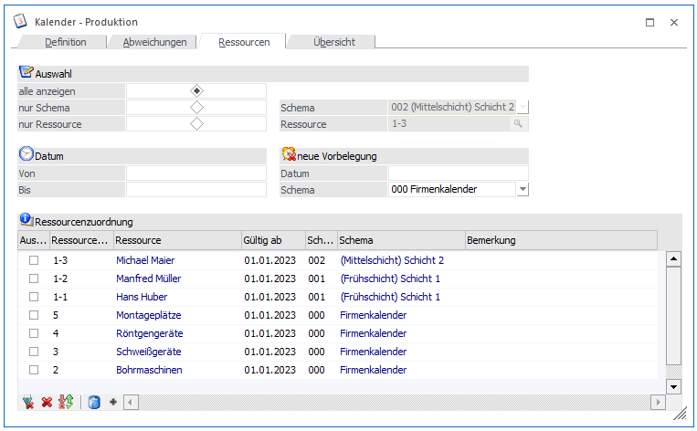
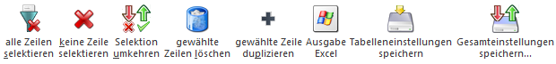

Im Register "Ressourcen" erfolgt die Verknüpfung des Kalenders bzw. der Schemata mit den Ressourcen.

Folgende Optionen stehen für die Anzeige zur Verfügung:
ü alle anzeigen
Es werden alle
Ressourcen angezeigt, die einem der Schemata zugeordnet sind.
ü nur Schema
Es werden nur jene
Ressourcen angezeigt, die dem ausgewählten Schema zugeordnet sind.
ü nur Ressource
Es wird nur die
ausgewählte Ressource mit dem dazugehörigen Schema angezeigt.
Ø Datum von / bis
Nach Eingabe des Datums und druck der RETURN-Taste wird die Tabelle sofort aktualisiert und es werden nur noch die Zeilen angezeigt, die dem Datum entsprechen.
Ø Neue Vorbelegung Datum
Das an dieser Stelle hinterlegte Datum wird bei neu erfassten Ressourcen-Schema-Zeilen als Datum in dem Feld "Gültig ab" vorgeschlagen.
Ø Neue Vorbelegung Schema
Hier wird das Schema hinterlegt, welches bei neu erfasste Ressourcen-Schema-Zeilen als Standard vorgeschlagen wird.
Folgende Eingabefelder können bearbeitet werden:
Ø Auswahl
Durch aktivieren der Checkbox, können die jeweiligen Ressourcen anschließend gelöscht oder dupliziert werden.
Ø Ressourcen Key
Hier wird die Ressource bzw. auch die Ressourcengruppe ausgewählt, die einem Schema zugeordnet werden soll (Matchcode mit F9).
Ø Ressource
Informationsfeld, welches die gewählte Ressource anzeigt (Bezeichnung 1).
Ø Gültig ab
Datum, ab dem die Ressource dem Schema zugeordnet ist.
Hinweis:
Einer Ressource können mehrere Schemata zugeordnet sein!
Beispiel
Hans Huber arbeitet im 1. Quartal in der Schicht 1 und im 2. Quartal in der Schicht 2. Er ist in der "Schicht 1" mit einer Gültigkeit ab 01.01.2023 eingetragen und in der "Schicht 2" mit einer Gültigkeit ab dem 01.04.2023.
Ø Schema Nummer
Hier wird das Schema ausgewählt, dem die Ressource bzw. die Ressourcengruppe zugeordnet werden soll.
Ø Schema Bezeichnung
Informationsfeld, welches das gewählte Schema anzeigt.
Ø Beschreibung
Eingabe eines freien Textes.
Hinweis
Im Menüpunkt "Produktion" - "Fehlzeitenerfassung" können die Fehlzeiten der Ressourcen erfasst werden (nähere Informationen siehe Kapitel Fehlzeitenerfassung).
Tabellenbuttons

Ø alle Zeilen selektieren
Durch Anklicken dieses Buttons werden alle Einträge selektiert.
Ø keine Zeilen selektieren
Durch Anklicken dieses Buttons werden alle bisher getroffenen Selektionen aufgehoben. Alle Einträge werden deselektiert.
Ø Selektion umkehren
Durch Anklicken dieses Buttons werden alle vorgenommenen Selektionen in das Gegenteil umgewandelt - selektierte Ressourcen werden deselektiert, deselektierte Ressourcen werden selektiert.
Ø gewählte Zeilen löschen
Durch Anklicken des "gewählte Zeilen löschen"-Buttons werden alle vorgenommenen Selektionen gelöscht.
Ø gewählte Zeilen duplizieren
Durch Anklicken dieses Buttons werden alle vorgenommenen Selektionen dupliziert. Dazu muss vorher das "Neue Vorbelegung Datum und Schema" definiert werden. Die duplizierten Zeilen werden mit diesen Hinterlegungen vorbelegt.
Ø
Ø Ausgabe Excel
Durch Anwahl des Buttons "Ausgabe Excel" wird der Inhalt der Tabelle an Microsoft Excel übergeben.
Ø Tabelleneinstellungen speichern
Die Spalten einer Tabelle können grundsätzlich an beliebige Positionen verschoben, bzw. in der Breite entsprechend angepasst werden. Durch Anwahl des Buttons "Tabelleneinstellungen speichern" werden die Einstellungen benutzerspezifisch gespeichert und bei dem nächsten Aufruf des Programmpunktes wieder vorgeschlagen.
Ø Gesamteinstellungen speichern…
Im Gegensatz zu "Tabelleneinstellungen speichern" können mit "Gesamteinstellungen speichern" mehrere Tabellenaufbauten gespeichert und nach Wunsch geladen werden. Zusätzlich werden Sonderfunktionen der Tabelle (z.B. "Spalte gruppieren") ebenfalls bei der Speicherung bedacht.